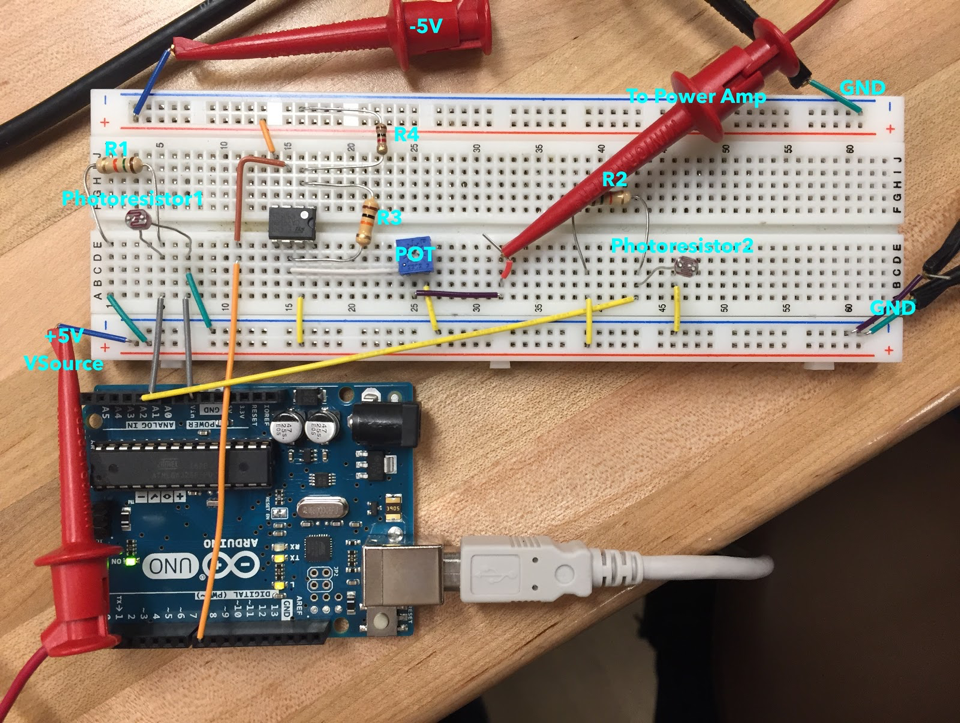

The Theramin circuit determines the amount of light absorbed by a photoresistor, and based on that quantitative value, produces an associated pitch. An Arduino Uno was used to convert the voltage across the photoresistor into a frequency and returned it as a square wave. The square wave travelled through a preamp and power amplifier, and then came out as sound through the speaker.
Here is a diagram of the circuit:
And here is the actual implementation
